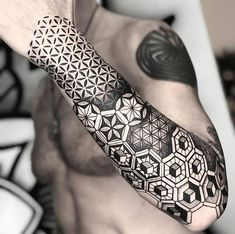

TATUAJES GEOMETRICOS

Los tattoos geométricos se han vuelto cada vez más populares en los últimos años, y por una buena razón. Este estilo de diseños simétricos se realizan mediante el uso de formas geométricas como círculos, triángulos, cuadrados y líneas rectas. Cada diseño tiene su propia simbología y significado, lo que lo convierte en una forma única de expresión personal.